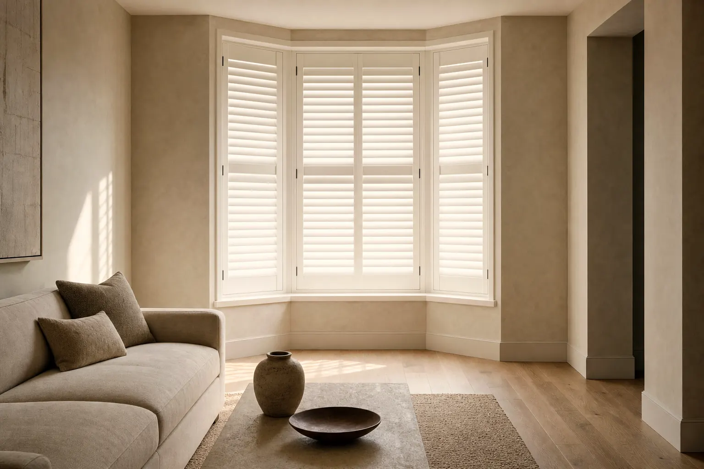

Home/Shop by need/Privacy, day and night
Need · Privacy
Privacy that still lets the day in.
Nearly every shade is private in daylight. The question worth asking is what happens at eight in the evening with the lamps on, because that is when most people get it wrong.

How it works
The mechanism, before the products.
Privacy follows the brighter side
You can see from the dark side into the light side. In daylight the street is brighter than your room, so a translucent shade reads as opaque from outside. After dark the room is brighter than the street, and the same shade reads as a lit screen with you on it.
Two products solve it two different ways
Either the material is opaque, so nothing passes in either direction, or the material tilts, so you aim the gap at the sky instead of at the pavement. Louvres and vanes take the second route, and it is the more liveable one on a ground floor.
Top-down/bottom-up is the underrated answer
On a street-facing window, lowering the top rail gives you daylight arriving above head height while the bottom two thirds stay closed. You keep the brightness and lose the sightline, without covering the window all day.
Tilt up, not down
With a blind, tilting the concave face of the slat upward sends the sightline to the sky and bounces light onto your ceiling. Tilting the other way points the gap at the footpath. Same blind, same angle, opposite result.
Before you order
Order up to eight free swatches and tape them to the glass at the hour the problem actually happens. It is the only test that settles this.
Order free samplesWhat we would fit
Three that actually work.
Ranked, with the downside written next to each one.
Tilt a louvre and the sightline goes away
The most complete answer we make. An engineered hardwood composite louvre is opaque, so closing it is genuinely private at any hour, and tilting it gives you light with no sightline. Louvres run 2 1/2", 3 1/2" and 4 1/2".
The tradeoff. Shutters are fitted inside a frame in the opening, which means they are the most permanent and the most expensive thing here. Panels are limited to 36" each, so a wide window gets more stiles across the glass.
ShuttersRoom darkening with top-down/bottom-up
Two thirds closed at eye level, top rail dropped for daylight. On a ground-floor bedroom or a bathroom facing a neighbour, this is usually the answer, and it stays private after dark because the fabric is room darkening rather than sheer.
The tradeoff. It is a fabric, so there is no tilt: you are trading coverage for light rather than aiming it. And a light filtering cellular will silhouette at night, so specify room darkening.
Cellular ShadesThe cheapest honest tilt
A 2" or 2 1/2" composite slat does the same job as a shutter louvre for a fraction of the cost, and the moisture-resistant polymer suits a bathroom. Routeless slats remove the cord holes that let pinpricks of light through.
The tradeoff. Slats stack at the top and never disappear the way a rolled shade does, and there is always a hairline between closed slats. Private, but not dark.
Faux Wood BlindsPublished ranges
The numbers, for the three lines above.
| Line | Width | Height | Opacity or material | Mount |
|---|---|---|---|---|
| Shutters | Up to 144" with multiple panels | Up to 36" per panel | Engineered hardwood composite | Inside opening with frame |
| Cellular Shades | 18" to 96" | 24" to 108" | Light filtering, room darkening, blackout | Inside or outside · 3/4" minimum depth |
| Faux Wood Blinds | 18" to 96" | 24" to 96" | Moisture-resistant polymer composite | Inside or outside · 2" minimum depth |
Straight answer
What will not get you there.
The range has eight lines. Some of them are the wrong answer here, and it is cheaper to read that than to return an order.
- Sheer shades on a ground-floor front room. Vanes closed still leaves two knit facings, and at night that is a silhouette.
- 10% and 14% solar screens for privacy. They are view-preserving by design, which is the same as saying you can be seen through them once the room is lit.
- Light filtering cellular or roller fabric, if night privacy is the point. Specify room darkening or blackout instead: same product, one step further.
- Any shade at all on a bathroom window where the glass is clear and the sill is deep enough to stand on. Frosted film plus a tilting louvre is the belt-and-braces answer.


Questions
Asked and answered.
Can people see in at night through my shades?
If the fabric passes any light, yes, they can see movement and shape. The test is simple: turn the room lights on, go outside after dark and look. If you can read the shape of a lamp through the shade, someone on the footpath can read you.
Are shutters more private than blinds?
Marginally, and mostly because the louvre is thicker and the frame closes the perimeter. A closed faux wood blind is private too. The real difference is that a shutter feels like part of the building and a blind feels like something hung in front of it.
What is the best privacy option for a bathroom?
Composite shutters if the budget allows, because they tilt and they do not mind the humidity. Faux wood blinds if it does not. Both are covered on the bathroom page with the mount notes that matter above a bath.
Does top-down/bottom-up work on every product?
Cellular shades, yes. It is not offered across the whole range, because it needs a second cord path inside the headrail that a roller tube or a shutter frame does not have.
Will a blind give me privacy from a neighbour above me?
Tilt the slats up and someone at a higher level can look down through the gap. That is the one case where a louvre loses to a fabric. If you are overlooked from above, use a room darkening shade with top-down/bottom-up and keep the top rail up.
Configure it at The Home Depot.
Every line on this page is sold and configured at The Home Depot, at the same published sizes and opacities we list here.
Configure size, opacity and lift on Home Depot. Veneta helps you decide before you buy.